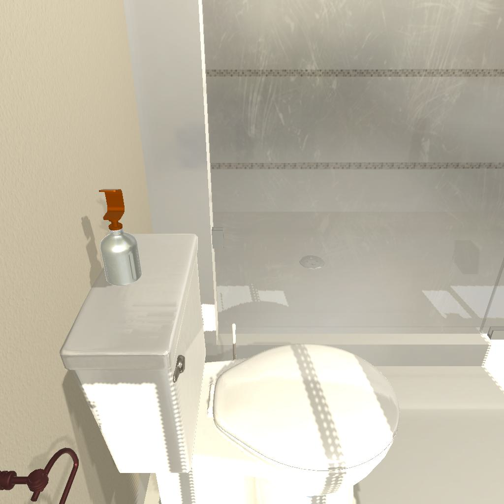

---------------------------------------------------------task: 28---------------------------------------------------------
--------------------------------------------------------------------------------------------------------------------------------------------------------------------
--------------------------------------------------------------------------------------------------------------------------------------------------------------------
Step:--------------------------------------------------------------------------2-------------------------------------------------------------------------------
----------------------------------------
VLM Prompt:
Image1:
Image2:
**Instruction**
1. Analyze the provided images to identify all visible household objects and compare the difference between images (e.h. whether the object is opened or not and taken on hand or not), focusing on those relevant to the task description "put two spraybottle in toilet."
2. Use the analysis of images and the task hint "The agent must find an object of the desired type, pick it up, find the correct location to place it, put it down there, then look for another object of the desired type, pick it up, return to previous location, and put it down there with the other object." to answer the question: what is the most reasonable action in the choices for the task description "put two spraybottle in toilet"?
3. Decide and write the answer using the template: The answer is: (i): , where i is the real number. If there is no desired object in images, search every place based on **Initial Observation** to find the object. And if no one is exactly correct, choose a similar answer.
**Initial Observation**
You are in the middle of a room. Looking quickly around you, you can see bathtub (1), bathtubbasin (1), cart (1), sink (1), garbagecan (1), sinkbasin (1), countertop (1), drawer (1-4), toilet (1), toiletpaperhanger (1)
**Answer Choices**
(1): go to bathtub 1
(2): go to bathtubbasin 1
(3): go to cart 1
(4): go to sink 1
(5): go to garbagecan 1
(6): go to sinkbasin 1
(7): go to countertop 1
(8): go to drawer 1
(9): go to drawer 2
(10): go to drawer 3
(11): go to drawer 4
(12): go to toilet 1
(13): go to toiletpaperhanger 1
**Answer**
Let's think step by step by following the instructions.
----------------------------------------
----------------------------------------
Original Response:
Image Analysis:
In both images, we can see a toilet with a closed lid and a spray bottle with a brown nozzle on top of the toilet tank. There are no visible differences between the two images, and no objects are opened or taken by hand.
Task Description Analysis:
The task is to put two spray bottles in the toilet. Since we can already see one spray bottle on top of the toilet tank, we need to find another spray bottle.
Initial Observation Analysis:
None of the listed objects in the Initial Observation directly suggest the presence of a spray bottle. However, spray bottles are often found in places where cleaning supplies are kept, such as under the sink, in a cart, or in a drawer.
Decision:
Based on the analysis, the most reasonable action is to look for another spray bottle in places where cleaning supplies might be stored. Therefore, the best options would be to go to places that could potentially contain another spray bottle, such as the cart or drawers.
The answer is: (10): go to drawer 3
----------------------------------------
----------------------------------------
>>> Refine Original VLM Response and Get Pure Action: go to drawer 3
----------------------------------------
-----------------------------------------------------------------
Running time: 17.385412216186523 seconds
Total Money: 14.419140000000002
-----------------------------------------------------------------
-----------------------------------------------------------------
Text Observation:You arrive at loc 9. The drawer 3 is closed.
-----------------------------------------------------------------
UNSUCCEED